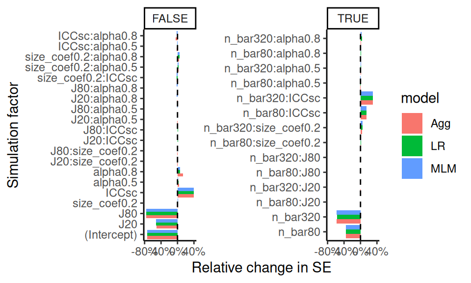
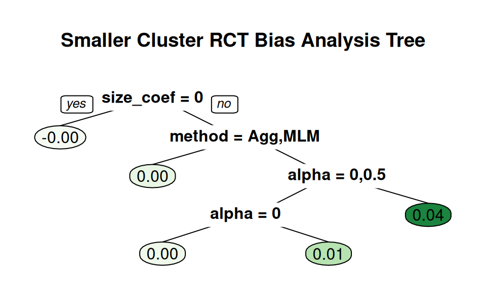
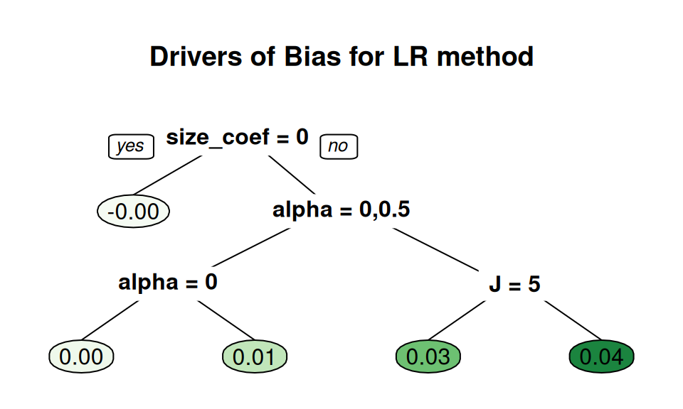

Chapter 13 Special Topics on Reporting Simulation Results
In this chapter we cover some special topics on reporting simulation results. We first walk through some examples of how to do regression modeling. We then dive more deeply into what to do when you have only a few iterations per scenario, and then we discuss what to do when you are evaluating methods that sometimes fail to converge or give an answer.
13.1 Using regression to analyze simulation results
In Chapter 11 we saw some examples of using regression and ANOVA to analyze simulation results. We next provide some further in-depth examples that give the code for doing this sort of thing.
13.1.1 Example 1: Biserial, revisited
We first give the code that produced the final ANOVA summary table for the biserial correlation example in Chapter 11. In the visualization there, we saw that several factors appeared to impact bias, but we might want to get a sense of how much. Under modeling of that same chapter, we saw a table that partialed out the variance across several factors so we could see which simulation factors mattered most for bias.
To build that table, we first fit a regression model to see:
options(scipen = 5)
mod = lm( bias ~ fixed + rho + I(rho^2) + p1 + n, data = r_F)
summary(mod, digits=2)##
## Call:
## lm(formula = bias ~ fixed + rho + I(rho^2) + p1 + n, data = r_F)
##
## Residuals:
## Min 1Q Median 3Q
## -0.0215935 -0.0013608 0.0003823 0.0015677
## Max
## 0.0081802
##
## Coefficients:
## Estimate Std. Error
## (Intercept) -0.00186446 0.00017971
## fixedSample cut-off -0.00363520 0.00009733
## rho -0.00942338 0.00069578
## I(rho^2) 0.00720857 0.00070868
## p1p1 = 1/3 0.00358696 0.00015390
## p1p1 = 1/4 0.00482709 0.00015390
## p1p1 = 1/5 0.00547657 0.00015390
## p1p1 = 1/8 0.00635532 0.00015390
## n.L 0.00362949 0.00010882
## n.Q -0.00103981 0.00010882
## n.C 0.00027941 0.00010882
## n^4 0.00001976 0.00010882
## t value Pr(>|t|)
## (Intercept) -10.375 <2e-16 ***
## fixedSample cut-off -37.347 <2e-16 ***
## rho -13.544 <2e-16 ***
## I(rho^2) 10.172 <2e-16 ***
## p1p1 = 1/3 23.307 <2e-16 ***
## p1p1 = 1/4 31.365 <2e-16 ***
## p1p1 = 1/5 35.585 <2e-16 ***
## p1p1 = 1/8 41.295 <2e-16 ***
## n.L 33.352 <2e-16 ***
## n.Q -9.555 <2e-16 ***
## n.C 2.568 0.0103 *
## n^4 0.182 0.8559
## ---
## Signif. codes:
## 0 '***' 0.001 '**' 0.01 '*' 0.05 '.' 0.1 ' ' 1
##
## Residual standard error: 0.003372 on 4788 degrees of freedom
## Multiple R-squared: 0.5107, Adjusted R-squared: 0.5096
## F-statistic: 454.4 on 11 and 4788 DF, p-value: < 2.2e-16The above printout gives main effects for each factor, averaged across other factors.
Because p1 and n are ordered factors, the lm() command automatically generates linear, quadradic, cubic and fourth order contrasts for them.
We smooth our rho factor, which has many levels of a continuous measure, with a quadratic curve.
We could instead use splines or some local linear regression if we were worried about model fit for a complex relationship.
The main effects are summaries of trends across contexts. For example, averaged across the other contexts, the “sample cutoff” condition is around 0.004 lower than the population (the baseline condition).
We can also use ANOVA to get a sense of the major sources of variation in the simulation results (e.g., identifying which factors have negligible/minor influence on the bias of an estimator).
To do this, we use aov() to fit an analysis of variance model:
## Df Sum Sq Mean Sq F value
## rho 1 0.002444 0.002444 1673.25
## p1 4 0.023588 0.005897 4036.41
## fixed 1 0.015858 0.015858 10854.52
## n 4 0.013760 0.003440 2354.60
## rho:p1 4 0.001722 0.000431 294.71
## rho:fixed 1 0.003440 0.003440 2354.69
## p1:fixed 4 0.001683 0.000421 287.98
## rho:n 4 0.002000 0.000500 342.31
## p1:n 16 0.019810 0.001238 847.51
## fixed:n 4 0.013359 0.003340 2285.97
## rho:p1:fixed 4 0.000473 0.000118 80.87
## rho:p1:n 16 0.001470 0.000092 62.91
## rho:fixed:n 4 0.002929 0.000732 501.23
## p1:fixed:n 16 0.001429 0.000089 61.12
## rho:p1:fixed:n 16 0.000429 0.000027 18.36
## Residuals 4700 0.006866 0.000001
## Pr(>F)
## rho <2e-16 ***
## p1 <2e-16 ***
## fixed <2e-16 ***
## n <2e-16 ***
## rho:p1 <2e-16 ***
## rho:fixed <2e-16 ***
## p1:fixed <2e-16 ***
## rho:n <2e-16 ***
## p1:n <2e-16 ***
## fixed:n <2e-16 ***
## rho:p1:fixed <2e-16 ***
## rho:p1:n <2e-16 ***
## rho:fixed:n <2e-16 ***
## p1:fixed:n <2e-16 ***
## rho:p1:fixed:n <2e-16 ***
## Residuals
## ---
## Signif. codes:
## 0 '***' 0.001 '**' 0.01 '*' 0.05 '.' 0.1 ' ' 1The advantage here is the multiple levels of our categorical factors get bundled together in our table of results, making a tidier display.
The table in Chapter 11 is a summary of this anova table, which we generate as follows:
library(lsr)
etaSquared(anova_table) %>%
as.data.frame() %>%
rownames_to_column("source") %>%
mutate( order = 1 + str_count(source, ":" ) ) %>%
group_by( order ) %>%
arrange( -eta.sq, .by_group = TRUE ) %>%
relocate( order ) %>%
knitr::kable( digits = 2 )We group the results by the order of the interaction, so that we can see the main effects first, then two-way interactions, and so on. We then sort within each group to put the high importance factors first. The resulting variance decomposition table (see Chapter 11) shows the amount of variation explained by each combination of factors.
13.1.2 Example 2: Cluster RCT example, revisited
When we have several methods to compare, we can also use meta-regression to understand how these methods change as other simulation factors change. We next continue our running Cluster RCT example.
We first turn our simulation levels (except for ICC, which has several levels) into factors, so R does not assume that sample size, for example, should be treated as a continuous variable:
sres_f <-
sres %>%
mutate(
across( c( n_bar, J, size_coef, alpha ), factor ),
ICC = as.numeric(ICC)
)
# Run the regression
M <- lm( bias ~ (n_bar + J + size_coef + ICC + alpha) * method,
data = sres_f )
# View the results
stargazer::stargazer(M, type = "text", single.row = TRUE )##
## ==================================================
## Dependent variable:
## ---------------------------
## bias
## --------------------------------------------------
## n_bar80 -0.003 (0.002)
## n_bar320 -0.001 (0.002)
## J20 -0.002 (0.002)
## J80 -0.002 (0.002)
## size_coef0.2 0.003 (0.002)
## ICC 0.001 (0.003)
## alpha0.5 -0.002 (0.002)
## alpha0.8 0.001 (0.002)
## methodLR -0.012*** (0.004)
## methodMLM 0.001 (0.004)
## n_bar80:methodLR 0.0001 (0.003)
## n_bar320:methodLR -0.00001 (0.003)
## n_bar80:methodMLM -0.0005 (0.003)
## n_bar320:methodMLM -0.001 (0.003)
## J20:methodLR 0.005* (0.003)
## J80:methodLR 0.006* (0.003)
## J20:methodMLM 0.001 (0.003)
## J80:methodMLM 0.001 (0.003)
## size_coef0.2:methodLR 0.016*** (0.002)
## size_coef0.2:methodMLM 0.003 (0.002)
## ICC:methodLR -0.0003 (0.004)
## ICC:methodMLM -0.006 (0.004)
## alpha0.5:methodLR 0.006** (0.003)
## alpha0.8:methodLR 0.017*** (0.003)
## alpha0.5:methodMLM 0.001 (0.003)
## alpha0.8:methodMLM 0.003 (0.003)
## Constant 0.002 (0.003)
## --------------------------------------------------
## Observations 810
## R2 0.273
## Adjusted R2 0.248
## Residual Std. Error 0.014 (df = 783)
## F Statistic 11.283*** (df = 26; 783)
## ==================================================
## Note: *p<0.1; **p<0.05; ***p<0.01We can quickly generate a lot of regression coefficients, making our meta-regression somewhat hard to interpret. The above model does not even have interactions of the simulation factors, even though the plots we have seen strongly suggest interactions among the simulation factors. That said, picking out the significant coefficients is a quick way to obtain clues as to what is driving performance. For instance, several features interact with the LR method for bias. The other two methods seem less impacted.
13.1.2.1 Using LASSO to simplify the model
We can simplify our model using LASSO regression, to drop coefficients that are less relevant. This requires some work to make our model matrix of dummy variables with all the interactions.
## Loaded glmnet 4.1-10# Define formula with all three-way interactions
form <- bias ~ ( n_bar + J + size_coef + ICC + alpha) * method
# Create model matrix
X <- model.matrix(form, data = sres_f)[, -1] # drop intercept
# Fit LASSO
fit <- cv.glmnet(X, sres_f$bias, alpha = 1)
# Coefficients
coef(fit, s = "lambda.1se") %>%
as.matrix() %>%
as.data.frame() %>%
rownames_to_column("term") %>%
filter(abs(lambda.1se) > 0) %>%
knitr::kable(digits = 3)| term | lambda.1se |
|---|---|
| (Intercept) | 0.000 |
| size_coef0.2 | 0.002 |
| alpha0.8 | 0.001 |
| size_coef0.2:methodLR | 0.008 |
| alpha0.8:methodLR | 0.007 |
When using regression, and especially LASSO, which levels are baseline can impact the final results. Here “Agg” is our baseline method, and so our coefficients are showing how other methods differ from the Agg method. If we selected LR as baseline, then we might suddenly see Agg and MLM as having large coefficients.
One trick is to give dummy variables for all the methods, and overload the method factor with the baseline method, so that it is always the first level.
form <- bias ~ 0 + ( n_bar + J + size_coef + ICC + alpha) * method
sres_f$method <- factor(sres_f$method)
vars = c("n_bar", "J", "size_coef", "alpha", "method")
contr.identity <- function(x) {
n = nlevels(x)
m <- diag(n)
rownames(m) <- colnames(m) <- levels(x)
m
}
contr.identity(sres_f$n_bar)## 20 80 320
## 20 1 0 0
## 80 0 1 0
## 320 0 0 1X <- model.matrix(~ 0 + ( n_bar + J + size_coef + alpha) * method,
data = sres_f,
contrasts.arg = lapply(sres_f[,vars],
\(x) contr.identity(x)))
colnames(X)## [1] "n_bar20"
## [2] "n_bar80"
## [3] "n_bar320"
## [4] "J5"
## [5] "J20"
## [6] "J80"
## [7] "size_coef0"
## [8] "size_coef0.2"
## [9] "alpha0"
## [10] "alpha0.5"
## [11] "alpha0.8"
## [12] "methodAgg"
## [13] "methodLR"
## [14] "methodMLM"
## [15] "n_bar20:methodAgg"
## [16] "n_bar80:methodAgg"
## [17] "n_bar320:methodAgg"
## [18] "n_bar20:methodLR"
## [19] "n_bar80:methodLR"
## [20] "n_bar320:methodLR"
## [21] "n_bar20:methodMLM"
## [22] "n_bar80:methodMLM"
## [23] "n_bar320:methodMLM"
## [24] "J5:methodAgg"
## [25] "J20:methodAgg"
## [26] "J80:methodAgg"
## [27] "J5:methodLR"
## [28] "J20:methodLR"
## [29] "J80:methodLR"
## [30] "J5:methodMLM"
## [31] "J20:methodMLM"
## [32] "J80:methodMLM"
## [33] "size_coef0:methodAgg"
## [34] "size_coef0.2:methodAgg"
## [35] "size_coef0:methodLR"
## [36] "size_coef0.2:methodLR"
## [37] "size_coef0:methodMLM"
## [38] "size_coef0.2:methodMLM"
## [39] "alpha0:methodAgg"
## [40] "alpha0.5:methodAgg"
## [41] "alpha0.8:methodAgg"
## [42] "alpha0:methodLR"
## [43] "alpha0.5:methodLR"
## [44] "alpha0.8:methodLR"
## [45] "alpha0:methodMLM"
## [46] "alpha0.5:methodMLM"
## [47] "alpha0.8:methodMLM"Now do the LASSO on this colinear mess:
fit <- cv.glmnet(X, sres_f$bias, alpha = 1)
coef(fit, s = "lambda.1se") %>%
as.matrix() %>%
as.data.frame() %>%
rownames_to_column("term") %>%
filter(abs(lambda.1se) > 0) %>%
knitr::kable(digits = 3)| term | lambda.1se |
|---|---|
| (Intercept) | 0.003 |
| size_coef0 | -0.001 |
| size_coef0.2 | 0.000 |
| alpha0.8 | 0.000 |
| size_coef0.2:methodLR | 0.008 |
| alpha0.8:methodLR | 0.006 |
We can also extend to allow for pairwise interactions of simulation factors:
Interestingly, we get basically the same result:
| term | lambda.1se |
|---|---|
| (Intercept) | 0.002 |
| size_coef0.2:alpha0.8 | 0.002 |
| size_coef0.2:methodLR | 0.002 |
| size_coef0.2:alpha0.8:methodLR | 0.021 |
13.1.2.2 Fitting models to each method
We know each method responds differently to the simulation factors, so we could fit three models, one for each method, and compare them.
meth = c( "LR", "MLM", "Agg" )
models <- map( meth, function(m) {
M <- lm( bias ~ (n_bar + J + size_coef + ICC + alpha)^2,
data = sres_f %>% filter( method == m ) )
tidy( M )
} )
models <-
models %>%
set_names(meth) %>%
bind_rows( .id = "model" )
m_res <- models %>%
dplyr::select( model, term, estimate ) %>%
pivot_wider( names_from="model", values_from="estimate" )
m_res %>%
knitr::kable( digits = 2 )| term | LR | MLM | Agg |
|---|---|---|---|
| (Intercept) | 0.01 | 0.00 | 0.01 |
| n_bar80 | -0.01 | -0.01 | -0.01 |
| n_bar320 | 0.00 | 0.00 | 0.00 |
| J20 | -0.01 | 0.00 | -0.01 |
| J80 | -0.01 | 0.00 | 0.00 |
| size_coef0.2 | 0.00 | 0.01 | 0.00 |
| ICC | 0.01 | 0.02 | 0.01 |
| alpha0.5 | -0.01 | -0.01 | -0.01 |
| alpha0.8 | -0.01 | 0.00 | 0.00 |
| n_bar80:J20 | 0.01 | 0.01 | 0.01 |
| n_bar320:J20 | 0.00 | 0.00 | 0.00 |
| n_bar80:J80 | 0.01 | 0.01 | 0.01 |
| n_bar320:J80 | 0.00 | 0.00 | 0.00 |
| n_bar80:size_coef0.2 | 0.00 | 0.00 | 0.00 |
| n_bar320:size_coef0.2 | 0.00 | 0.00 | 0.00 |
| n_bar80:ICC | 0.00 | 0.00 | 0.00 |
| n_bar320:ICC | -0.01 | 0.00 | -0.01 |
| n_bar80:alpha0.5 | 0.00 | 0.00 | 0.00 |
| n_bar320:alpha0.5 | 0.00 | 0.00 | 0.01 |
| n_bar80:alpha0.8 | 0.00 | 0.00 | 0.00 |
| n_bar320:alpha0.8 | 0.00 | 0.00 | 0.00 |
| J20:size_coef0.2 | 0.00 | 0.00 | 0.00 |
| J80:size_coef0.2 | 0.00 | 0.00 | -0.01 |
| J20:ICC | -0.01 | -0.02 | -0.01 |
| J80:ICC | 0.00 | -0.01 | 0.00 |
| J20:alpha0.5 | 0.01 | 0.01 | 0.01 |
| J80:alpha0.5 | 0.01 | 0.01 | 0.01 |
| J20:alpha0.8 | 0.02 | 0.01 | 0.01 |
| J80:alpha0.8 | 0.01 | 0.00 | 0.00 |
| size_coef0.2:ICC | 0.01 | -0.01 | 0.01 |
| size_coef0.2:alpha0.5 | 0.02 | 0.00 | 0.00 |
| size_coef0.2:alpha0.8 | 0.04 | 0.01 | 0.00 |
| ICC:alpha0.5 | -0.01 | -0.01 | -0.01 |
| ICC:alpha0.8 | 0.00 | -0.01 | 0.00 |
Of course, this is table is hard to read. Better to instead plot the coefficients or use LASSO to simplify the model specification.
m_resL <- m_res %>%
pivot_longer( -term,
names_to = "model", values_to = "estimate" ) %>%
mutate( term = factor(term, levels = unique(term)) ) %>%
mutate( has_nbar = str_detect(term, "n_bar" ),
has_J = str_detect(term, "J"),
has_size_coef = str_detect(term, "size_coef"),
has_ICC = str_detect(term, "ICC"),
has_alpha = str_detect(term, "alpha") )
ggplot( m_resL,
aes( x = term, y = estimate,
fill = model, group = model ) ) +
facet_wrap( ~ has_nbar, scales="free_y" ) +
geom_bar( stat = "identity", position = "dodge" ) +
coord_flip()
Here we see how LR stands out, but also how MLM stands out under different simulation factor combinations. Staring at this provides some understanding of how the methods are similar, and dissimilar.
For another example we turn to the standard error.
Here we regress \(log(SE)\) onto the coefficients, and we rescale ICC to be on a 5 point scale to control it’s relative coefficeint size to the dummy variables.
We regress \(log(SE)\) and then exponentiate the coefficients to get the relative change in SE.
We can then interpret an exponentiated coefficient of, 0.64 for MLM for n_bar80 as a 36% reduction of the standard error when we increase n_bar from the baseline of 20 to 80.
Here we make a plot like above, but with these relative changes:

This clearly shows that the methods are basically the same in terms of uncertainty estimation.
We also see some interesting trends, such as the impact of n_bar declines when ICC is higher (see the interaction terms at rigth of plot).
13.2 Using regression trees to find important factors
With more complex experiments, where the various factors are interacting with each other in strange ways, it can be a bit tricky to decipher which factors are important and identify stable patterns. Another approach we might use to explore is to fit a regression tree on the simulation results.
## Loading required package: rpartset.seed(4344443)
create_analysis_tree( sres_f,
outcome = "bias",
predictor_vars = c("method", "n_bar", "J",
"size_coef", "ICC", "alpha"),
tree_title = "Cluster RCT Bias Analysis Tree" )We will not walk through the tree code, but you can review it here.
This function is a wrapper of the rpart package.
The default pruning is based on a cross-fitting evaluation, and our sample size is not too terribly high (just the number of simulation scenarios fit). Rerunning the code with a different seed can give a different tree. In general, it might be worth forcibly simplifying the tree. Trees are built greedily, so forcibly trimming often gives you the big things. For example:
create_analysis_tree( sres_f,
outcome = "bias",
predictor_vars = c("method", "n_bar", "J",
"size_coef", "ICC", "alpha"),
tree_title = "Smaller Cluster RCT Bias Analysis Tree" )
A very straightforward story: if size_coef is not 0, we are using LR, and alpha is large, then we have large bias.
We can also zero in on specific methods to understand how they engage with the simulation factors, like so:
create_analysis_tree( filter( sres_f, method=="LR" ),
outcome = "bias",
min_leaves = 4,
predictor_vars = c("n_bar", "J",
"size_coef", "ICC", "alpha"),
tree_title = "Drivers of Bias for LR method" )We force more leaves to get at some more nuance. We again immediately see, for the LR method, that bias is large when we have non-zero size coefficient and large alpha value. Then, when \(J\) is small, bias is even larger.
Generally we would not use a tree like this for a final reporting of results, but they can be important tools for understanding your results, which leads to how to make and select more conventional figures for final reporting.
13.3 Analyzing results with few iterations per scenario
When your simulation iterations are expensive to run (i.e., when each model fitting takes several minutes), then running thousands of iterations for many scenarios may not be computationally feasible. But running simulations with a smaller number of iterations will yield very noisy estimates of estimator performance. For a given scenario, if the methods being evaluated are substantially different, then the main patterns in performance might become evident even with only a few iterations. More generally, however, the Monte Carlo Standard Errors (MCSEs) may be so large that you will have a hard time discriminating between systematic patterns and noise.
One tool to handle this is aggregation: if you use visualization methods that average across scenarios, those averages will have more precise estimates of (average) performance. Do not, by contrast, trust the bundling approaches–the MCSEs will make your boxes wider, and give the impression that there is more variation across scenarios than there really is. Regression approaches can be particularly useful: the regressions will effectively average performance across scenario, and give summaries of overall trends. You can even fit random effects regression, specifically accounting for the noise in the scenario-specific performance measures. For more on this approach see Gilbert and Miratrix (2024).
13.3.1 Example: ClusterRCT with only 100 replicates per scenario
In the prior chapter we analyzed the results of our cluster RCT simulation with 1000 replicates per scenario. But say we only had 100 per scenario. Using the prior chapter as a guide, we recreate some of the plots to show how MCSE can distort the picture of what is going on.
First, we look at our single plot of the raw results. Before we plot, however, we calculate MCSEs and add them to the plot as error bars.
sres_sub <-
sres %>%
filter( n_bar == 320, J == 20 ) %>%
mutate( bias.mcse = SE / sqrt( R ) )
ggplot( sres_sub, aes( as.factor(alpha), bias,
col=method, pch=method, group=method ) ) +
facet_grid( size_coef ~ ICC, labeller = label_both ) +
geom_point() +
geom_errorbar( aes( ymin = bias - 2*bias.mcse,
ymax = bias + 2*bias.mcse ),
width = 0 ) +
geom_line() +
geom_hline( yintercept = 0 ) +
theme_minimal() 
Aggregation should smooth out some of our uncertainty. When we aggregate across 9 scenarios, our number of replicates goes from 100 to 900; our MCSEs should be about a third the size. Here is our aggregated bias plot:
sres_sub2 <-
sres %>%
mutate( bias.mcse = SE / sqrt( R ) ) %>%
group_by( n_bar, J ) %>%
summarise(
bias = mean( bias ),
bias.mcse = sqrt( mean( bias.mcse^2 )) / sqrt(n()),
.groups = "drop"
)
ggplot( sres_sub, aes( as.factor(alpha), bias,
col=method, pch=method, group=method ) ) +
facet_grid( size_coef ~ ICC, labeller = label_both ) +
geom_point() +
geom_errorbar( aes( ymin = bias - 2*bias.mcse,
ymax = bias + 2*bias.mcse ),
width = 0 ) +
geom_line() +
geom_hline( yintercept = 0 ) +
theme_minimal() 
To get aggregate MCSE, we aggregate our scenario-specific MCSEs as follows: \[ MCSE_{agg} = \sqrt{ \frac{1}{K^2} \sum_{k=1}^{K} MCSE_k^2 } \]
where \(MCSE_i\) is the Monte Carlo Standard Error for scenario \(i\), and \(k\) is the number of scenarios. Assuming a collection of estimates are independent, the overall \(SE^2\) of the average is the average \(SE^2\) divided by \(K\).
Even with the additional replicates per point, we see noticable noise in our plot. Note how our three methods track each other up and down in the zero-bias scenarios, giving a sense of a shared bias in some cases. This is because all methods are analyzing the same set of datasets; they have shared uncertainty. This uncertainty can be deceptive. It can also be a boon: if we are explicitly comparing the performance of one method vs another, the shared uncertainty can be subtracted out, similar to what happens in a blocked experiment (Gilbert and Miratrix 2024).
Here we fit a multilevel model to the data.
library(lme4)
sub_res <-
res %>%
filter( runID <= 100 ) %>%
mutate(
error = ATE_hat - ATE,
simID = paste(n_bar, J, size_coef, ICC, alpha, sep = "_"),
J = as.factor(J),
n_bar = as.factor(n_bar),
alpha = as.factor(alpha),
size_coef = as.factor(size_coef)
)
M <- lmer(
error ~ method*(J + n_bar + ICC + alpha + size_coef) + (1|runID) + (1|simID),
data = sub_res
)
arm::display(M)## lmer(formula = error ~ method * (J + n_bar + ICC + alpha + size_coef) +
## (1 | runID) + (1 | simID), data = sub_res)
## coef.est coef.se
## (Intercept) -0.09 0.05
## methodLR -0.02 0.05
## methodMLM 0.00 0.05
## J20 0.05 0.04
## J80 0.04 0.04
## n_bar80 0.06 0.04
## n_bar320 0.04 0.04
## ICC -0.03 0.06
## alpha0.5 -0.01 0.04
## alpha0.8 0.04 0.04
## size_coef0.2 0.04 0.03
## methodLR:J20 0.01 0.04
## methodMLM:J20 0.00 0.04
## methodLR:J80 0.02 0.04
## methodMLM:J80 0.00 0.04
## methodLR:n_bar80 0.01 0.04
## methodMLM:n_bar80 0.00 0.04
## methodLR:n_bar320 0.00 0.04
## methodMLM:n_bar320 0.00 0.04
## methodLR:ICC -0.01 0.06
## methodMLM:ICC -0.01 0.06
## methodLR:alpha0.5 0.00 0.04
## methodMLM:alpha0.5 0.00 0.04
## methodLR:alpha0.8 0.01 0.04
## methodMLM:alpha0.8 0.00 0.04
## methodLR:size_coef0.2 0.01 0.03
## methodMLM:size_coef0.2 0.00 0.03
##
## Error terms:
## Groups Name Std.Dev.
## simID (Intercept) 0.19
## runID (Intercept) 0.02
## Residual 0.33
## ---
## number of obs: 2430, groups: simID, 270; runID, 3
## AIC = 2046.9, DIC = 1712.4
## deviance = 1849.6We can look at the random effects:
ranef_vars <-
as.data.frame(VarCorr(M)) %>%
dplyr::select(grp = grp, sd = vcov) %>%
mutate( sd = sqrt(sd),
ICC = sd^2 / sum(sd^2 ) )
knitr::kable(ranef_vars, digits = 2)| grp | sd | ICC |
|---|---|---|
| simID | 0.19 | 0.24 |
| runID | 0.02 | 0.00 |
| Residual | 0.33 | 0.75 |
The above model is a multilevel model that allows us to estimate how bias varies with method and simulation factor, while accounting for the uncertainty in the simulation.
The random variation for simID captures unexplained variation due to the interactions of the simulation factors. We see a large value, indicating that many interactions are present, and our main effects are not fully capturing all trends.
13.4 Analyzing results when some trials have failed
If the method you are evaluating sometimes fail, then when they tend to fail is something to investigate in its own right. Ideally, failure would not be too common, meaning we could drop those trials, or keep them, without really impacting our overall results. But one should at least know what one is ignoring.
For example, in our cluster RCT running example, we know that our multilevel model, at least sometimes, has convergence issues. We also know that ICC is an important driver of when these convergence issues might occur, so we can explore how often we get a convergence message by ICC level:
res %>%
group_by( method, ICC ) %>%
summarise( message = mean( message ) ) %>%
pivot_wider( names_from = "method", values_from="message" )## Warning: There were 15 warnings in `summarise()`.
## The first warning was:
## ℹ In argument: `message = mean(message)`.
## ℹ In group 1: `method = "Agg"` `ICC = 0`.
## Caused by warning in `mean.default()`:
## ! argument is not numeric or logical: returning NA
## ℹ Run `dplyr::last_dplyr_warnings()` to see the
## 14 remaining warnings.## # A tibble: 5 × 4
## ICC Agg LR MLM
## <dbl> <dbl> <dbl> <dbl>
## 1 0 NA NA NA
## 2 0.2 NA NA NA
## 3 0.4 NA NA NA
## 4 0.6 NA NA NA
## 5 0.8 NA NA NAWe see that when the ICC is 0 we get a lot of convergence issues, but as soon as we pull away from 0 it drops off considerably. At this point we might decide to drop those runs with a message or keep them. In this case, we decide to keep. It should not matter much, except possibly when ICC = 0, and we know the convergence issues are driven by trying to estimate a 0 variance, and thus is in some sense expected. Furthermore, we know people using these methods would likely ignore these messages, and thus we are faithfully capturing how these methods would be used in practice. We might eventually, however, want to do a separate analysis of the ICC = 0 context to see if the MLM approach is actually falling apart, or if it is just throwing warnings.